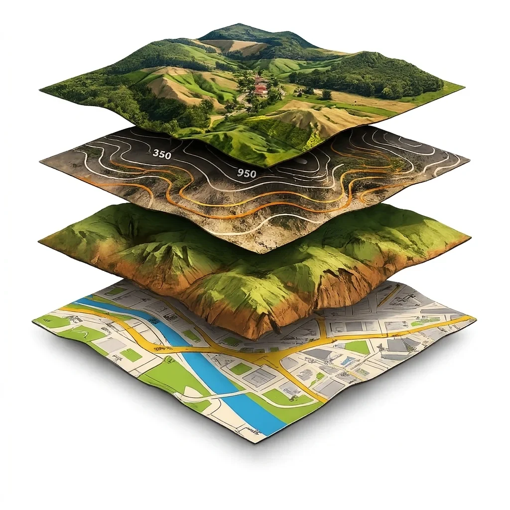

Cargando las cuatro capas 3D…
ROTASAT / GEOVISUALIZACIÓN 3D
Pantalla completa
04 · Agrícola
03 · Curvas
02 · Relieve
01 · Mapa
Arrastra para girar · Zoom con rueda o dos dedos · Haz clic en una capa
4 / 4 CAPAS